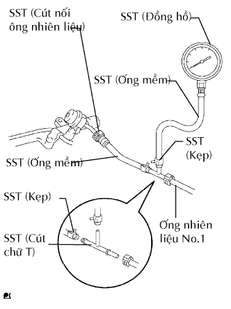

HỆ THỐNG NHIÊN LIỆU > KIỂM TRA TRÊN XE |
| 1. KIỂM TRA SỰ HOẠT ĐỘNG CỦA BƠM VÀ RÒ RỈ NHIÊN LIỆU |
 |
Nối máy chẩn đoán với giắc DLC3.
Bật khoá điện ON.
Bật công tắc chính của máy chẩn đoán ON.
Hãy chọn thử kích hoạt và truy nhập và menu sau: Powertrain / Engine and ECT / Active Test / Control the Fuel Pump / Speed.
Kiểm tra hoạt động của bơm nhiên liệu.
Kiểm tra áp suất ở ống vào nhiên liệu từ ống nhiên liệu. Kiểm tra rằng có thể nghe thấy tiếng nhiên liệu chảy vào bình xăng.
Nếu không có tiếng kêu, hãy kiểm tra rơle tổ hợp, bơm nhiên liệu và giắc nối dây điện.
Kiểm tra rò rỉ nhiên liệu.
Kiểm tra rằng không có rò rỉ nhiên liệu trong hệ thống nhiên liệu sau khi tiến hành bảo dưỡng.
Nếu có rò rỉ nhiên liệu, hãy sửa chữa hoặc thay thế các bộ phận khi cần.
| 2. KIỂM TRA ÁP SUẤT NHIÊN LIỆU |
Kiểm tra rằng điện áp ắc quy lớn hơn 12 V.
Xả áp suất của hệ thống nhiên liệu (Xem trang Kích chuột vào đây).
Ngắt cáp ra khỏi cực âm của ắc quy.
Hãy kẹp và kéo ống nhiên liệu số 1 (cút nối ống nhiên liệu) để ngắt nó ra khỏi bộ lọc nhiên liệu.
|  |
Lắp SST (Đồng hồ đo áp suất) như chỉ ra trong hình vẽ.
Hãy lau sạch xăng bắn ra.
Lắp cáp vào cực âm (-) ắc quy.
Vận hành bơm nhiên liệu.
Nối máy chẩn đoán với giắc DLC3.
Bật khoá điện ON.
Bật công tắc chính của máy chẩn đoán ON.
Hãy chọn thử kích hoạt và truy nhập và menu sau: Powertrain / Engine and ECT / Active Test / Control the Fuel Pump / Speed.
Đo áp suất nhiên liệu.
Khởi động động cơ.
Đo áp suất nhiên liệu.
Tắt máy.
Kiểm tra rằng áp suất nhiên liêu vẫn duy tri ở tiêu chuẩn khoảng 5 phút sau khi động cơ tắt máy.
Sau khi kiểm tra áp suất nhiên liệu, hãy tháo cáp âm ra khỏi ắc quy và cẩn thận khi tháo SST và cút nối ống nhiên liệu để tránh cho xăng khỏi bắn ra.
Lắp ống nhiên liệu số 1 (cút nối ống nhiên liệu).
Kiểm tra rò rỉ nhiên liệu.
Kiểm tra rằng không có rò rỉ nhiên liệu trong hệ thống nhiên liệu sau khi tiến hành bảo dưỡng.
Nếu có rò rỉ nhiên liệu, hãy sửa chữa hoặc thay thế các bộ phận khi cần.